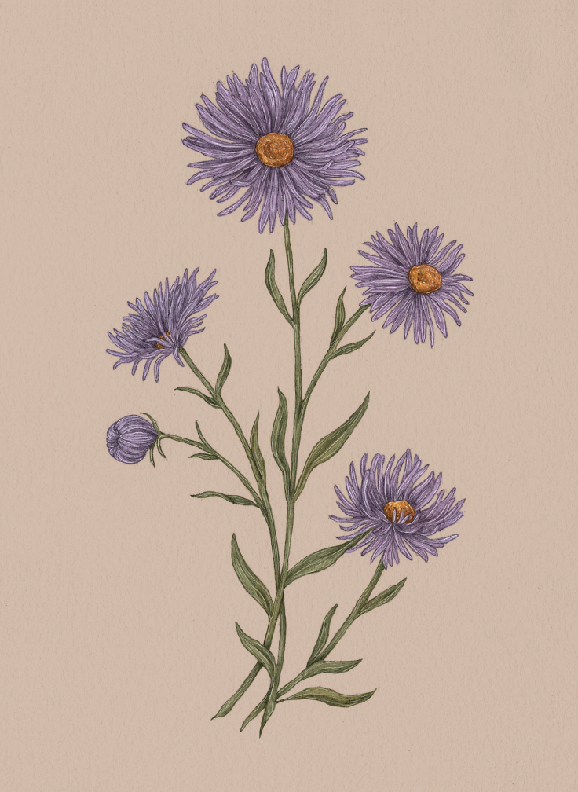

Plate ASTER
The Language of Flowers
Aster Study

Aster
Symphyotrichum
Definition: A flower associated in floriography with daintiness and delicate beauty.
Victoria's Definition: Patience
Meaning
Daintiness
Origin
The aster's association with daintiness most likely comes from its appearance. The many long and
slender petals delicately surround a bright, yellow center: a tiny masterpiece in a field of blooms.
Pair With
- Daisy for a gift for a young girl
- Buttercup to compliment someone's charming demeanor